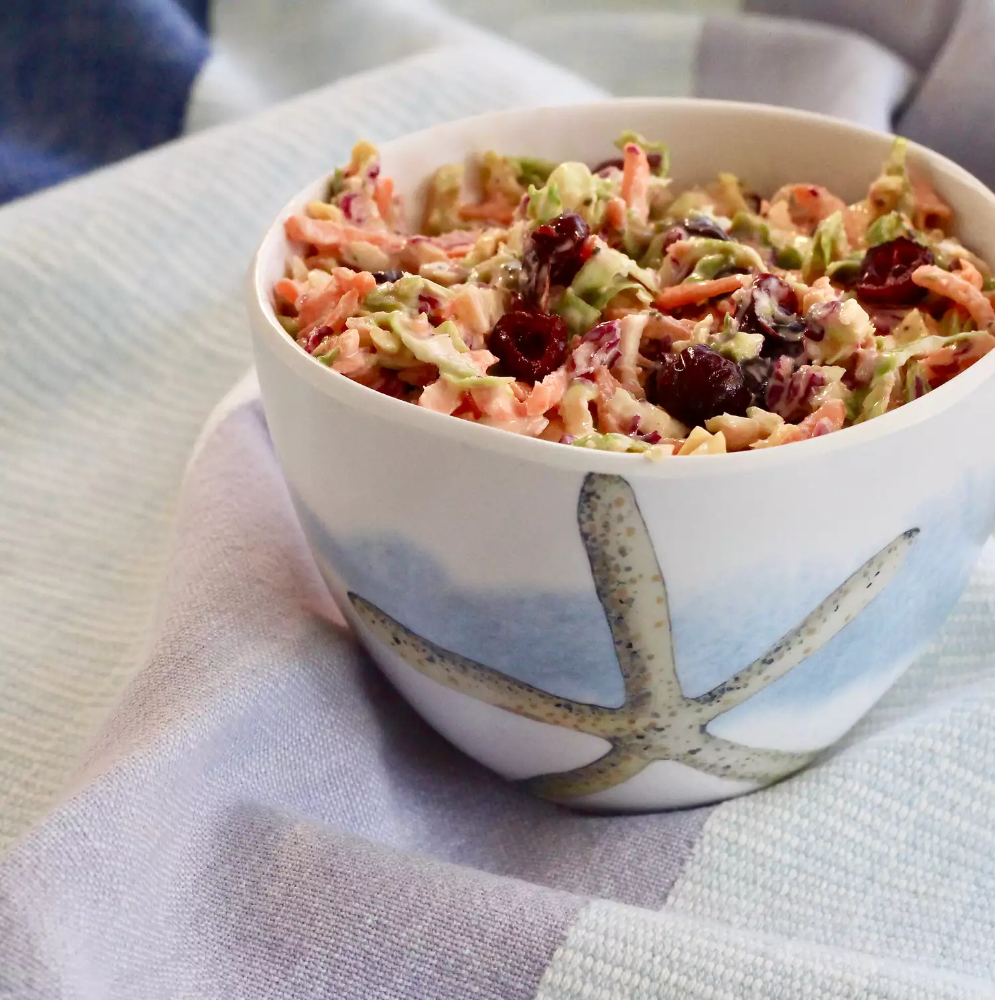

Brussels Sprout Slaw with Cranberries

Description
Similar to a coleslaw, but made with shredded Brussels sprouts instead of cabbage for a unique taste!
Ingredients
- 1 pound Brussels sprouts, shredded
- 4 carrots, peeled and shredded
- 1 cup shredded red cabbage
- 1 cup creamy salad dressing (such as Miracle Whip®)
- 1 cup mayonnaise
- ⅓ cup canola oil
- ¼ cup apple cider vinegar
- 1 tablespoon celery seed
- salt and ground black pepper to taste
- 5 ounces dried cranberries
Steps
- Combine Brussels sprouts, carrots, and cabbage in a large bowl.
- Combine salad dressing, mayonnaise, canola oil, vinegar, celery seed, salt, and pepper in a separate bowl.
- Pour dressing over vegetables and toss well to combine.
- Add dried cranberries and toss again.